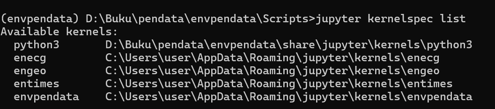
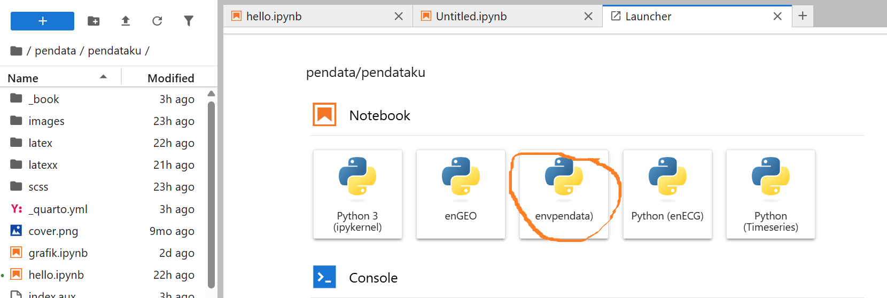

Persiapan
Membuat enviroment untuk analisa data
Penambangan data membutuhkan tool dan perangkat yang dibutuhkan untuk melakukan analisa data. Kita perlu mempersiapkan lingkungan yang sesuai dengan kebutuhan kita dalam melakukan analis. Lingkungan adalah wadah untuk menampung library python sehingga kita secara konsisten dapat menggunakan library tanpa ada konflik terhadap yang library yang lain. Selanjutnya lingkungan ini disebut sebagai kernel dalam Jupyter lab
Berikut adalah panduan langkah demi langkah untuk menambah kernel baru di Jupyter Lab.
Pastikan Lingkungan Python Siap
Pastikan Anda memiliki lingkungan Python (venv atau conda) yang ingin Anda gunakan sebagai kernel sudah aktif. Jika belum ikuti panduan lengkap untuk membuat environment (lingkungan virtual) pada Python. Environment berguna untuk mengisolasi dependensi proyek agar tidak bentrok dengan proyek lain. Ada dua cara populer yang biasa digunakan: menggunakan modul bawaan venv atau menggunakan conda.
A. Menggunakan venv (Bawaan Python). Metode ini sudah tersedia secara default jika Anda menginstal Python dari python.org.
- Buat Environment Buka terminal atau command prompt, navigasi ke folder proyek Anda, lalu jalankan:
python -m venv envpendataAktifkan Environment Perintah aktivasi berbeda tergantung sistem operasi Anda.
Windows (Command Prompt):
bashenvpendata\Scripts\activateWindows (PowerShell):
bashenvpendata\Scripts\Activate.ps1Mac / Linux:
bash source envpendata/bin/activate
Setelash aktif, Anda akan melihat nama environment di awal baris terminal, contoh: (envpendata) C:\Users\Nama>.
B. Menggunakan conda (Anaconda/Miniconda)
Metode ini populer di kalangan data science karena memudahkan manajemen paket biner.
- Buat Environment Jalankan perintah berikut untuk membuat environment baru dengan versi Python tertentu:
conda create --name envpendata python=3.9Anda akan diminta konfirmasi (y/n), ketik y lalu Enter.
- Aktifkan Environment
conda activate envpendata- Cek environmet
Untuk memastikan Anda sudah berada di dalam environment yang benar, cek lokasi instalasi Python:
which python(Atau where python di Windows).
Pastikan path yang muncul mengarah ke folder environment Anda (misalnya mengandung nama venv atau anaconda3/envs).
- Instal Paket
Setelah environment aktif, Anda bisa menginstal paket-paket yang diperlukan.
Menggunakan pip: (misal butuh paket pandas)
pip install numpy pandasMenggunakan conda:
conda install numpy pandasInstal ipykernel
Di dalam lingkungan Python tersebut, instal paket ipykernel menggunakan pip atau conda.
Menggunakan pip:
python -m pip install ipykernelMenggunakan conda:
conda install ipykernelDaftarkan Kernel ke Jupyter
Jalankan perintah berikut untuk mendaftarkan lingkungan Python saat ini sebagai kernel Jupyter yang baru.
python -m ipykernel install --user --name=nama_kernel --display-name "Nama Tampilan"Contoh: Jika Jika nama enviromentnyA adalah enpendata maka
python -m ipykernel install --user --name=envpendata --display-name "myenvpendata)"Verifikasi Instalasi
Untuk memastikan kernel sudah terdaftar, jalankan perintah berikut di terminal:
jupyter kernelspec list
Anda akan melihat daftar kernel yang tersedia, termasuk kernel baru yang saja Anda tambahkan.
Pilih Kernel di Jupyter Lab
- Buka Jupyter Lab.
- Buat notebook baru (File > New > Notebook).
- Pilih kernel yang baru ditambahkan dari daftar yang muncul.
- Atau, jika notebook sudah terbuka, ganti kernel melalui menu Kernel > Change Kernel.
Berikut tampilan kernel yang ada pada jupyter lab

##Menghapus Kernel (Opsional)
Jika ingin menghapus kernel tertentu, gunakan perintah berikut:
jupyter kernelspec uninstall nama_kernelContoh:
jupyter kernelspec uninstall envpendataDengan langkah ini, Anda sudah berhasil menambah kernel kustom di Jupyter Lab.
Membuat Repositori di github
Berikut adalah panduan langkah demi langkah untuk membuat repositori di GitHub:
Login ke Akun GitHub
Pastikan Anda sudah memiliki akun GitHub. Buka github.com dan login menggunakan kredensial Anda.
Isi Informasi Repositori
Anda akan diarahkan ke halaman “Create a new repository”. Isi formulir berikut:
- Repository name: Masukkan nama repositori (wajib). Nama ini harus unik untuk akun Anda.
- Description (opsional): Isi deskripsi singkat tentang proyek Anda.
- Visibility:
- Public: Siapa saja dapat melihat repositori ini.
- Private: Hanya Anda dan kolaborator yang diundang yang dapat melihat.
- Initialize this repository with:
- Add a README file: Centang jika ingin membuat file README.md langsung.
- Add .gitignore: Pilih template sesuai bahasa pemrograman (opsional).
- Choose a license: Pilih lisensi open source jika diperlukan (opsional).
Buat Repositori
Setelah semua informasi diisi, gulir ke bawah dan klik tombol hijau Create repository.
Mengunggah Kode (Jika Ada)
Setelah repositori dibuat, Anda akan melihat halaman kosong atau isi README. Jika Anda sudah memiliki kode di komputer lokal, Anda bisa menghubungkannya menggunakan terminal/command prompt:
# Jika repositori kosong dan ingin push kode yang ada
git init
git add .
git commit -m "First commit"
git branch -M main
git remote add origin https://github.com/USERNAME/NAMA-REPO.git
git push -u origin mainAtau jika Anda memilih opsi Add a README file saat pembuatan, Anda bisa langsung meng-clone repositori tersebut:
git clone https://github.com/USERNAME/NAMA-REPO.gitSekarang repositori GitHub Anda sudah siap digunakan!
Clone ke Komputer Lokal
Setelah repo dibuat, copy URL-nya lalu jalankan di terminal:
git clone https://github.com/username/nama-repo.git cd nama-repo Push Project yang Sudah Ada
Jika kamu sudah punya folder project lokal:
cd folder-project-kamu
git init git add .
git commit -m "first commit"
git branch -M main
git remote add origin https://github.com/username/nama-repo.git
git push -u origin main Perintah Git Dasar Sehari-hari
| Perintah | Fungsi | |||
git status |
Cek status perubahan | |||
git add . |
Tambahkan semua perubahan | |||
git commit -m "pesan" |
Simpan perubahan | |||
git push |
Upload ke GitHub | |||
git pull |
Download update terbaru | |||